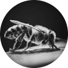

¡Baile de la Comida!
Las abejas melíferas tienen un baile especial para indicar la ubicación de la fuente de néctar. Si la comida está cerca, realizan una danza redonda. Si está más lejos, una danza en forma de ocho. ¡Imagina una fiesta de baile en la colmena!